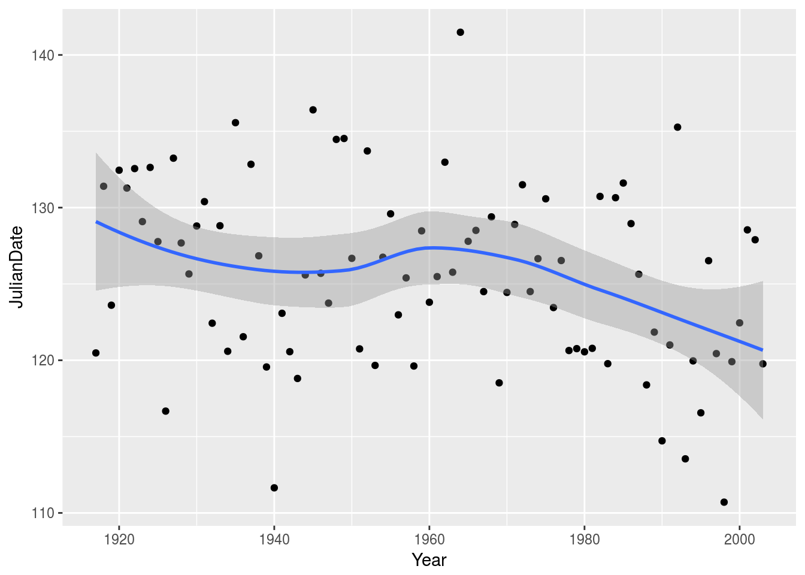

How to change the significant digits in a tibble
packages
library(tidyverse)## ── Attaching packages ────────────────────────────────────────────────────────────────────────────────────── tidyverse 1.2.1 ──## ✔ ggplot2 2.2.1.9000 ✔ purrr 0.2.4
## ✔ tibble 1.4.2 ✔ dplyr 0.7.4
## ✔ tidyr 0.8.0 ✔ stringr 1.3.0
## ✔ readr 1.1.1 ✔ forcats 0.3.0## ── Conflicts ───────────────────────────────────────────────────────────────────────────────────────── tidyverse_conflicts() ──
## ✖ dplyr::filter() masks stats::filter()
## ✖ dplyr::lag() masks stats::lag()library(lubridate)##
## Attaching package: 'lubridate'## The following object is masked from 'package:base':
##
## dateIntroduction
When you display a tibble, or a data frame as a tibble, it is made to look nice and to show the most important digits. Let’s illustrate with the inevitable mtcars:
as_tibble(mtcars)## # A tibble: 32 x 11
## mpg cyl disp hp drat wt qsec vs am gear carb
## * <dbl> <dbl> <dbl> <dbl> <dbl> <dbl> <dbl> <dbl> <dbl> <dbl> <dbl>
## 1 21.0 6.00 160 110 3.90 2.62 16.5 0 1.00 4.00 4.00
## 2 21.0 6.00 160 110 3.90 2.88 17.0 0 1.00 4.00 4.00
## 3 22.8 4.00 108 93.0 3.85 2.32 18.6 1.00 1.00 4.00 1.00
## 4 21.4 6.00 258 110 3.08 3.22 19.4 1.00 0 3.00 1.00
## 5 18.7 8.00 360 175 3.15 3.44 17.0 0 0 3.00 2.00
## 6 18.1 6.00 225 105 2.76 3.46 20.2 1.00 0 3.00 1.00
## 7 14.3 8.00 360 245 3.21 3.57 15.8 0 0 3.00 4.00
## 8 24.4 4.00 147 62.0 3.69 3.19 20.0 1.00 0 4.00 2.00
## 9 22.8 4.00 141 95.0 3.92 3.15 22.9 1.00 0 4.00 2.00
## 10 19.2 6.00 168 123 3.92 3.44 18.3 1.00 0 4.00 4.00
## # ... with 22 more rowsThis shows, by default, three significant digits. Compare that with displaying it as a data.frame (which is what mtcars) actually is:
mtcars## mpg cyl disp hp drat wt qsec vs am gear carb
## Mazda RX4 21.0 6 160.0 110 3.90 2.620 16.46 0 1 4 4
## Mazda RX4 Wag 21.0 6 160.0 110 3.90 2.875 17.02 0 1 4 4
## Datsun 710 22.8 4 108.0 93 3.85 2.320 18.61 1 1 4 1
## Hornet 4 Drive 21.4 6 258.0 110 3.08 3.215 19.44 1 0 3 1
## Hornet Sportabout 18.7 8 360.0 175 3.15 3.440 17.02 0 0 3 2
## Valiant 18.1 6 225.0 105 2.76 3.460 20.22 1 0 3 1
## Duster 360 14.3 8 360.0 245 3.21 3.570 15.84 0 0 3 4
## Merc 240D 24.4 4 146.7 62 3.69 3.190 20.00 1 0 4 2
## Merc 230 22.8 4 140.8 95 3.92 3.150 22.90 1 0 4 2
## Merc 280 19.2 6 167.6 123 3.92 3.440 18.30 1 0 4 4
## Merc 280C 17.8 6 167.6 123 3.92 3.440 18.90 1 0 4 4
## Merc 450SE 16.4 8 275.8 180 3.07 4.070 17.40 0 0 3 3
## Merc 450SL 17.3 8 275.8 180 3.07 3.730 17.60 0 0 3 3
## Merc 450SLC 15.2 8 275.8 180 3.07 3.780 18.00 0 0 3 3
## Cadillac Fleetwood 10.4 8 472.0 205 2.93 5.250 17.98 0 0 3 4
## Lincoln Continental 10.4 8 460.0 215 3.00 5.424 17.82 0 0 3 4
## Chrysler Imperial 14.7 8 440.0 230 3.23 5.345 17.42 0 0 3 4
## Fiat 128 32.4 4 78.7 66 4.08 2.200 19.47 1 1 4 1
## Honda Civic 30.4 4 75.7 52 4.93 1.615 18.52 1 1 4 2
## Toyota Corolla 33.9 4 71.1 65 4.22 1.835 19.90 1 1 4 1
## Toyota Corona 21.5 4 120.1 97 3.70 2.465 20.01 1 0 3 1
## Dodge Challenger 15.5 8 318.0 150 2.76 3.520 16.87 0 0 3 2
## AMC Javelin 15.2 8 304.0 150 3.15 3.435 17.30 0 0 3 2
## Camaro Z28 13.3 8 350.0 245 3.73 3.840 15.41 0 0 3 4
## Pontiac Firebird 19.2 8 400.0 175 3.08 3.845 17.05 0 0 3 2
## Fiat X1-9 27.3 4 79.0 66 4.08 1.935 18.90 1 1 4 1
## Porsche 914-2 26.0 4 120.3 91 4.43 2.140 16.70 0 1 5 2
## Lotus Europa 30.4 4 95.1 113 3.77 1.513 16.90 1 1 5 2
## Ford Pantera L 15.8 8 351.0 264 4.22 3.170 14.50 0 1 5 4
## Ferrari Dino 19.7 6 145.0 175 3.62 2.770 15.50 0 1 5 6
## Maserati Bora 15.0 8 301.0 335 3.54 3.570 14.60 0 1 5 8
## Volvo 142E 21.4 4 121.0 109 4.11 2.780 18.60 1 1 4 2Usually, this is what you want. But not always. So how do you change it, if you want to? There’s a simple answer, but I have a story to tell first.
The Ice Classic
There is a competition each year in Nenana, Alaska, where people have to guess when the ice will melt, down to the nearest minute. Precisely, A wooden tripod is placed on the frozen river, and people try to guess the exact minute when the ice melts enough for the tripod to fall through the ice. The contest started in 1917 as an amusement for railway workers, and has taken place every year since. Now, hundreds of thousands of people enter their guesses on the Internet and the prize for the winner can be as much as $300,000.
Because so much money is at stake, and because the exact same tripod is placed at the exact same spot on the ice every year, the data are consistent and accurate. Does this sound like the preamble of an assignment question? It was.
Let’s read in the data:
myurl="http://www.utsc.utoronto.ca/~butler/c32/nenana.txt"
nenana=read_tsv(myurl)## Parsed with column specification:
## cols(
## Year = col_integer(),
## JulianDate = col_double(),
## `Date&Time` = col_character()
## )nenana## # A tibble: 87 x 3
## Year JulianDate `Date&Time`
## <int> <dbl> <chr>
## 1 1917 120 April 30 at 11:30 AM
## 2 1918 131 May 11 at 9:33 AM
## 3 1919 124 May 3 at 2:33 PM
## 4 1920 132 May 11 at 10:46 AM
## 5 1921 131 May 11 at 6:42 AM
## 6 1922 133 May 12 at 1:20 PM
## 7 1923 129 May 9 at 2:00 AM
## 8 1924 133 May 11 at 3:10 PM
## 9 1925 128 May 7 at 6:32 PM
## 10 1926 117 April 26 at 4:03 PM
## # ... with 77 more rowsThe interesting thing here is JulianDate. This is the fractional number of days from January 1 when the ice melted, each year. Perhaps the most interesting thing to do with these data is to see whether there is a trend in this with Year:
ggplot(nenana,aes(x=Year,y=JulianDate))+geom_point()+geom_smooth()## `geom_smooth()` using method = 'loess' and formula 'y ~ x'
There is a lot of variability, but since about 1960 there appears to be a downward trend in JulianDate: that is, the ice is typically melting earlier each year.
I wanted to see whether the Julian date had been calculated correctly. In particular, there is a function yday in lubridate that calculates the number of the day within a year from a date, and since we have the actual dates we can check this. The first step is to turn the Date&Time into a proper date-time, and the first part of that step is to glue the Year onto the front of it. I use str_c from stringr for this:
nenana %>%
mutate(long_date=str_c(Year," ",`Date&Time`)) %>%
mutate(dt=ymd_hm(long_date,tz="America/Anchorage")) %>%
select(-`Date&Time`)## # A tibble: 87 x 4
## Year JulianDate long_date dt
## <int> <dbl> <chr> <dttm>
## 1 1917 120 1917 April 30 at 11:30 AM 1917-04-30 11:30:00
## 2 1918 131 1918 May 11 at 9:33 AM 1918-05-11 09:33:00
## 3 1919 124 1919 May 3 at 2:33 PM 1919-05-03 14:33:00
## 4 1920 132 1920 May 11 at 10:46 AM 1920-05-11 10:46:00
## 5 1921 131 1921 May 11 at 6:42 AM 1921-05-11 06:42:00
## 6 1922 133 1922 May 12 at 1:20 PM 1922-05-12 13:20:00
## 7 1923 129 1923 May 9 at 2:00 AM 1923-05-09 02:00:00
## 8 1924 133 1924 May 11 at 3:10 PM 1924-05-11 15:10:00
## 9 1925 128 1925 May 7 at 6:32 PM 1925-05-07 18:32:00
## 10 1926 117 1926 April 26 at 4:03 PM 1926-04-26 16:03:00
## # ... with 77 more rowsThat seems to have worked. Note that lubridate has handled the AM/PM properly.
Now I can calculate the Julian dates from dt and compare with JulianDate that came from the data file:
nenana %>%
mutate(long_date=str_c(Year," ",`Date&Time`)) %>%
mutate(dt=ymd_hm(long_date,tz="America/Anchorage")) %>%
mutate(jd=yday(dt)) ->
nenana2
nenana2 %>%
select(Year,JulianDate,jd)## # A tibble: 87 x 3
## Year JulianDate jd
## <int> <dbl> <dbl>
## 1 1917 120 120
## 2 1918 131 131
## 3 1919 124 123
## 4 1920 132 132
## 5 1921 131 131
## 6 1922 133 132
## 7 1923 129 129
## 8 1924 133 132
## 9 1925 128 127
## 10 1926 117 116
## # ... with 77 more rowsWait, some of these are not the same. Did the Ice Classic people make an error, or did I? (Place your bets now.)
There is a clue here, which is the dbl at the top of each column: these are decimal numbers that got rounded to 3 significant digits. What is it about the ones that got rounded wrong?
nenana2 %>%
filter(round(JulianDate) != round(jd)) %>%
select(Year, JulianDate, jd, `Date&Time`)## # A tibble: 61 x 4
## Year JulianDate jd `Date&Time`
## <int> <dbl> <dbl> <chr>
## 1 1919 124 123 May 3 at 2:33 PM
## 2 1922 133 132 May 12 at 1:20 PM
## 3 1924 133 132 May 11 at 3:10 PM
## 4 1925 128 127 May 7 at 6:32 PM
## 5 1926 117 116 April 26 at 4:03 PM
## 6 1928 128 127 May 6 at 4:25 PM
## 7 1929 126 125 May 5 at 3:41 PM
## 8 1930 129 128 May 8 at 7:03 PM
## 9 1933 129 128 May 8 at 7:30 PM
## 10 1934 121 120 April 30 at 2:07 PM
## # ... with 51 more rowsThese are all PMs, and the JulianDate in the data file is one more than the jd I calculated. You can certainly reason out what happened, but can we display a couple more decimal places in JulianDate and jd?
Getting extra decimal places
When you display a tibble, the display is controlled by the package pillar (one of the many packages loaded by the tidyverse: the philosophy is that each aspect of the tidyverse is controlled by a separate relatively small package). So how do you control what pillar does? There is a variable pillar.sigfigs (that I had to do a fair amount of digging to find), which is set as an Option:
*** this doesn’t actually display with more decimals
options(pillar.sigfigs=100)
nenana2 %>%
filter(round(JulianDate) != round(jd)) %>%
select(JulianDate, jd
) %>%
print(width=80)## # A tibble: 61 x 2
## JulianDate jd
## <dbl> <dbl>
## 1 124 123
## 2 133 132
## 3 133 132
## 4 128 127
## 5 117 116
## 6 128 127
## 7 126 125
## 8 129 128
## 9 129 128
## 10 121 120
## # ... with 51 more rowsNow we have an answer to our question. yday calculates the integer part of the Julian date, but if the ice melted after noon, the fractional part of JulianDate is bigger than 0.5, and JulianDate will get rounded up to the next integer. That’s why those JulianDate values appear to be 1 too big.
The solution involved thinking about what yday actually does, but we were deceived by the display of the tibble, and we had to realize that those apparent integers were actually rounded decimal numbers.